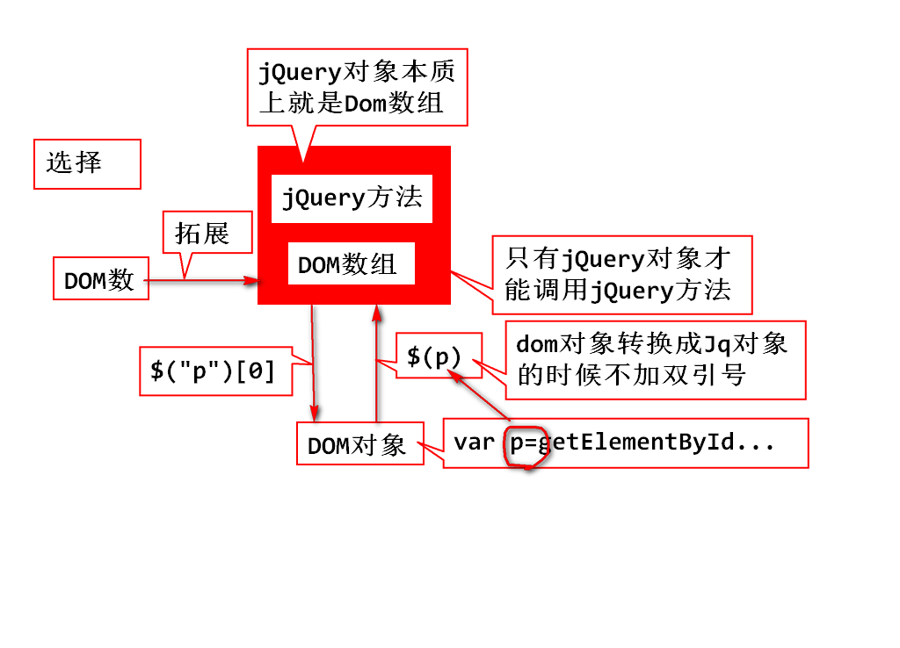

function bigger(){
//1.获取p的字号
var size=$("p").css("font-size");
//把"16px"变成可以计算的数字,去掉单位
size=size.replace("px","");
//字号加大号,设置p标签的字号
$("p").css("font-size",++size +"px");
}

<ul>
<li>北京</li>
<li>上海</li>
<li id="gz">广州</li>
<li class="sz">深圳</li>
<li>佳木斯儿</li>
</ul>
$(function(){
//1.基本选择器
$("li");
$("#gz");
$(".sz");
$("ul li");
$("ul>#gz");
$("ul .sz");
//2.层次选择器
$("#gz+li");//选择他的弟弟
$("#gz~");//选择他的弟弟们
//3.过滤选择器
//4.表单选择器
});
$("li:first");
$("li:lt(2)");//下标小于index的标签
$("li:odd");
$("li:last");
$("li:eq(0)");
$("li:not(#gz)")
$("li:contains('州')")
$("li:empty")
$("li:hidden")
<li style="...."></li>
$("li[style]")//li标签带有style属性
$("[href='#']")//带有href属性并且,值为'#'
$("[href!='#']")//带有href属性,并且值不为"#"
$("[href$='.jpg']")//有href,值以'.jpg'结尾
$("input:disabled")
$("input:checked")
$(":text");
var str=obj.html();
obj.html("<span>123</span>");
var str=obj.text();
obj.text("123");
var str=obj.val();
obj.val("abc");
obj.attr("属性名");
obj.attr("属性名","属性值");
<body>
<p>jQuery支持<b>读写</b>节点</p>
<p>jQuery支持<b>增删</b>节点</p>
<img alt="" src="../img/06.png">
<div>
<input type="button" value="点点我" onclick="fn1();">
</div>
</body>
function fn1(){
console.log($("p:eq(0)").html());
console.log($("p:eq(1)").text());
$("img").attr("src","../img/13.png");
$(":button").val("别点我");
//更改两个P标签的中文本内容,<u></u>
//html(),text();
//打印当前img的src值
//打印当前button的value值
}
var oSpan=$("<span>你好</span>");
parent.append(obj);//做为最后子节点添加进来
parent.prepend(obj);//做为第一个
brother.before(obj);//做为上一个兄弟节点
brother.after(obj);//做为下一个兄弟节点
<div>
<input type="button" value="追加" onclick="fn1();">
<input type="button" value="插入" onclick="fn2();">
<input type="button" value="删除" onclick="fn3();">
</div>
<ul>
<li>北京</li>
<li>上海</li>
<li id="gz">广州</li>
<li>深圳</li>
<li>杭州</li>
</ul>
function fn1(){//追加
var oLi=$("<li>天津</li>");
$("ul").append(oLi);
//$("ul").prepend(oLi);
}
function fn2(){//插入
var oLi=$("<li>西安</li>");
//$("#gz").before(oLi);
$("#gz").after(oLi);
}
obj.remove(); //删除这个节点
obj.remove(selector);//只删除满足selector条件的节点
obj.addClass("ok")
obj.removeClass("error");//移除指定的样式
obj.removeClass();//移除所有样式
obj.hasClass("ok")//判断是否有某个样式
obj.toggleClass("ok");//切换样式
obj.css("样式属性","样式的值");//设置具体样式
obj.css("样式属性");//获得具体样式的值
$("p").addClass("red").addClass("big");
$(function(){
setInterval(function(){
$("p").toggleClass("big").toggleClass("red");
},500);
});
1. 选择器过滤器 $("p")
2. 转型:Dom-->jQuery对象 $(Dom)
var oP=document.getElementsByTagName("p")[0];
$(oP).addClass(...)
3. 创建新节点
$("<p></p>")
obj.html("abc")
obj.attr("src","../img/06.png")
obj.addClass("red").removeClass("red")
obj.val();
obj.html();
obj.text();
控制台输出,看对象结构